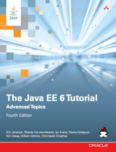
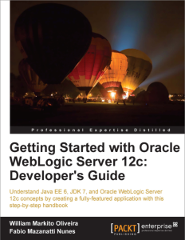

Curriculum
Blog
Talks
Conferences
FOSDEM 2016 (HPC, Big Data and Machine Learning track) – Brussels, Belgium.
ApacheCon 2015 – Austin, Texas.
- Implementing a Highly-Scalable Stock Prediction System with R, GemFire and Spring XD – Fred Melo, Pivotal and William Markito, Pivotal
OSCON 2015 – Portland, USA.
- Build your first Internet of Things app today with Open Source
IMCSummit (In-memory Summit) – San Francisco, USA.
- Implementing a Highly Scalable In-Memory Stock Prediction System with Apache Geode, R and Spring XD
QCon Rio – Rio de Janeiro, Brazil.
- In-Memory Analytics e Machine Learning na prática com Spark, Geode, Spring XD e Docker
ApacheCon Big Data – Budapest, Hungary.
- An Introduction to Apache Geode (incubating)
- Implementing a Highly Scalable In-Memory Stock Prediction System with Apache Geode (incubating), R and Spring XD
- Building a Highly-Scalable Open-Source Real-time Streaming Analytics System Using Spark SQL, Apache Geode (incubating), SpringXD and Apache Zeppelin (incubating)
SpringOne2GX 2015 – Washington, USA.
- IMPLEMENTING A HIGHLY SCALABLE STOCK PREDICTION SYSTEM WITH R, GEMFIRE AND SPRING XD
Modern Database Benchmarks, Policamp – Campinas, Brazil.
Videos
- William Oliveira & Brian “Redbeard” Harrington, Red Hat - SiliconANGLE theCUBE - KubeCon 2018
- Panel: Knative, Kubernetes & Istio: A New Cloud Stack? OpenShift Commons Gathering Seattle 2018
- Knative - Going Native and Serverless on Kubernetes | DevNation Live
- Building Apps with Distributed In-Memory Computing using Apache Geode
- Apache Geode & Docker
- Implementing a highly scalable Stock prediction system with R, GemFire and Spring XD - SpringOne2GX 2015
- OSCON 2015: Build Your First IoT App Today with Open Source
Publications
Books
| The Java EE 7 Tutorial: Volume 2 (5th Edition) (Java Series) |
The Java EE 7 Tutorial: Volume 1 (5th Edition) (Java Series) |
|
|
| The Java EE 6 Tutorial: Advanced Topics (4th Edition) |
Getting Started with Oracle WebLogic Server 12c: Developer’s Guide |
|  |
 |
Articles
- Red Hat collaborates with Google, SAP, IBM and others on Knative to deliver hybrid serverless workloads to the enterprise - Red Hat Blog, 2018/12
- State of Serverless in Kubernetes: Knative and OpenShift Cloud Functions - Red Hat OpenShift Blog, 2018/07
- An Open Source Reference Architecture For Real-Time Stock Prediction - Pivotal Blog, 2015/12
- An Open Source Reference Architecture For Real-Time Stock Prediction, InfoQ (Chinese), 2015/12
- The Java EE 7 Tutorial: Getting Started with Web Applications, InformIT, 2014/06
- The Java EE 7 Tutorial: Enterprise Beans, InformIT, 2014/06
- JavaServer Faces Technology: Advanced Concepts, InformIT, 2013/01
- Oracle WebLogic RESTful Management Services: From Command Line to JavaFX, 2012/08
- Oracle WebLogic RESTful Management Services: From Command Line to JavaFX (Japanese), 2012/08
- Oracle Enterprise Gateway: Integration with Oracle Service Bus and Oracle Web Services Manager, Oracle Technology Network, 2012/03
- Caching strategies for Oracle Service Bus, 2011/07
- SOA in Practice – Part 2 (pt-BR), Java Magazine Ed 63, 2008/03
- SOA in Practice – Part 1 (pt-BR), Java Magazine Ed 62, 2008/02
- EAI in Practice, Java Magazine Ed 59 (pt-BR), 2007/01